Bulletins neige · Conseils ski
Des bulletins neige quotidiens pour les skieurs : où est la neige, ce qui arrive et où skier, d'après la carte de neige SnowScope et les stations de mesure. Chaque chiffre vient des données du jour.

Vail en chiffres : un pic habituel d'environ 64 in (162 cm) à mi-pente sur 46 hivers passés, mars le mois le plus enneigé, plus domaine, accès et sécurité.
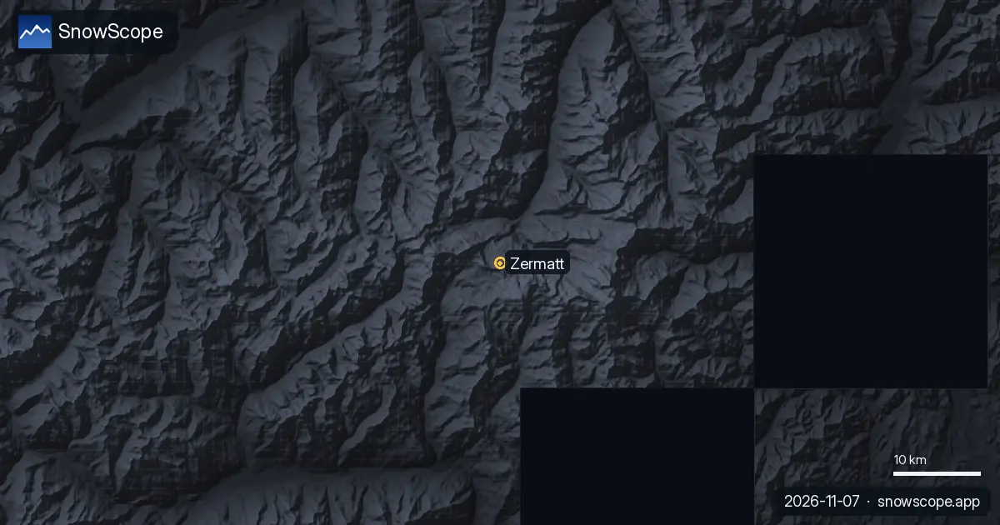
Zermatt en chiffres : où la neige tient, les mois les plus sûrs et comment rejoindre le village sans voitures, d'après 46 hivers passés.

Steamboat, Colorado, en famille : ce qui convient aux tout-petits, aux enfants, aux ados et aux parents, avec la neige de 46 hivers passés à trois altitudes.
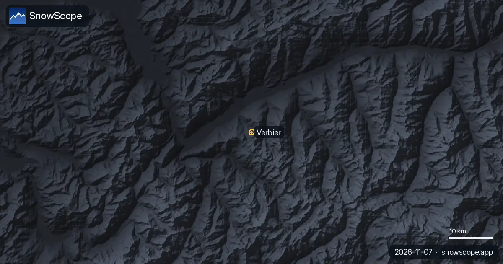
Verbier est-il fait pour les débutants ? Quand la neige est-elle la meilleure ? Comment y aller ? Réponses sur les 4 Vallées et 46 hivers passés.
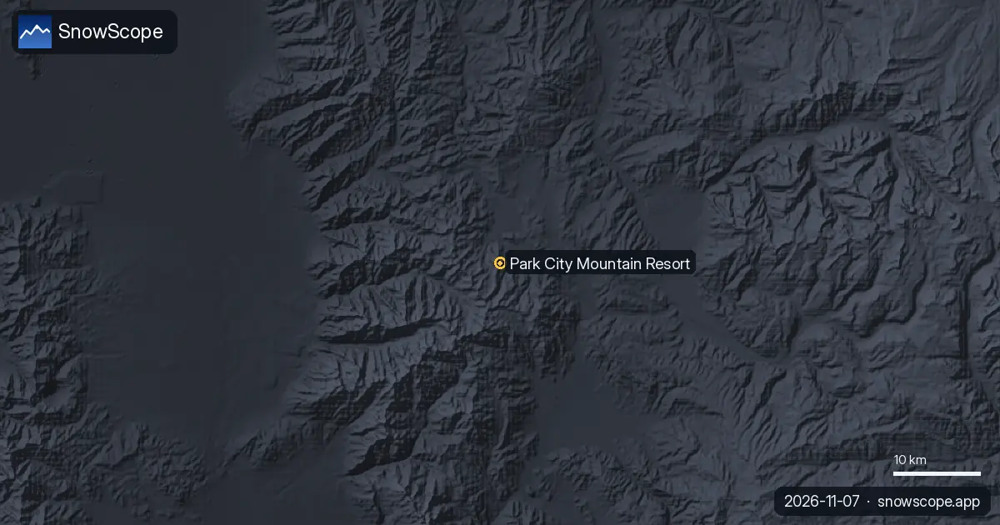
Un programme de premier jour à Park City Mountain, Utah, avec notre historique : environ 71 in (180 cm) au pic habituel à mi-pente sur 46 hivers passés, le mieux en février-mars.
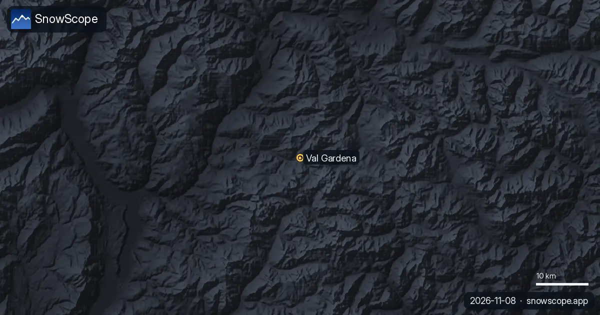
Le Sella Ronda depuis Sëlva dans le Val Gardena : cols de Gardena, Campolongo, Pordoi et Sella dans l'ordre, avec notre historique de neige de 46 hivers passés.

Mt Baker, État de Washington : environ 133 in (337 cm) au pic habituel à mi-pente sur 46 hivers passés, un record mondial de neige, aucun hébergement sur place.
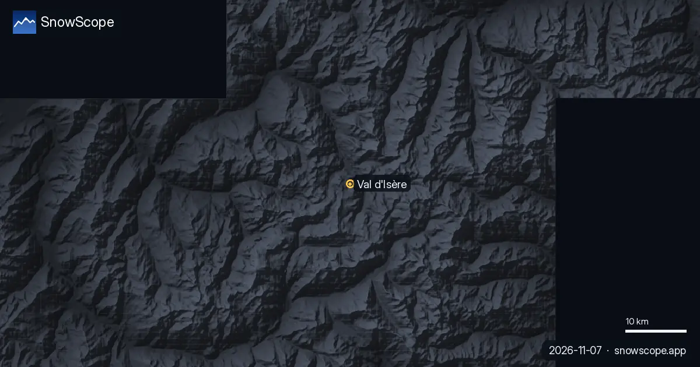
Val d'Isère et l'Espace Killy pour débutants, skieurs moyens et experts, avec la neige de 46 hivers passés à trois altitudes.

Préparez Mammoth Mountain selon la saison : environ 93 in (235 cm) au pic habituel à mi-pente sur 46 hivers passés, mars le plus enneigé, longs printemps, hivers variables.

Kitzbühel est célèbre et basse. Ce que disent 46 hivers passés de la neige à 762 m, 1 377 m et 1 993 m, ce qui a changé, et quelles semaines sont le pari le plus sûr.

Les idées reçues sur Jackson Hole face aux faits et à notre historique : environ 80 in (204 cm) au pic habituel à mi-pente sur 46 hivers passés, sans baisse nette.
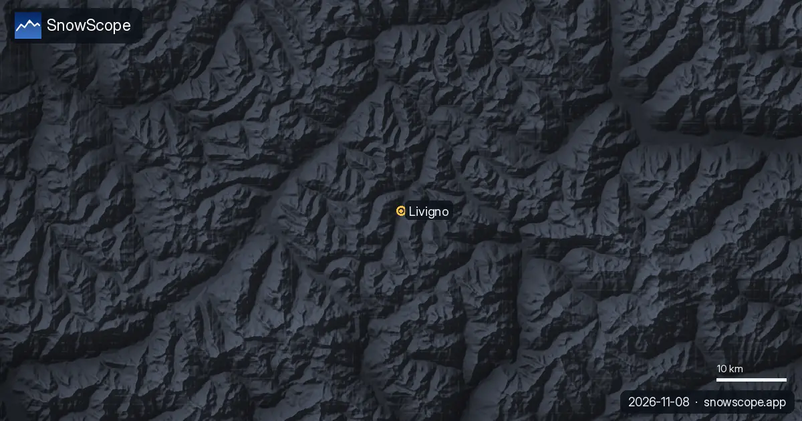
Dix points pratiques pour un séjour de ski à Livigno : les routes, le froid, les boutiques détaxées, les deux versants et le meilleur moment pour la neige, d'après 46 hivers passés.
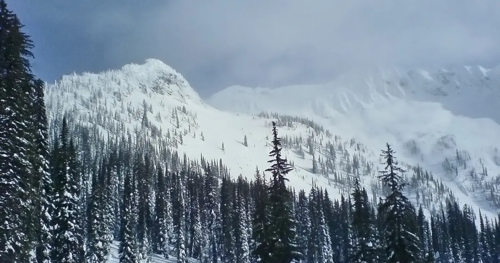
Comment se déroule d'habitude une journée de neige à Whitewater, près de Nelson, de la météo du matin à la dernière descente, avec la neige de 46 hivers passés à trois altitudes.
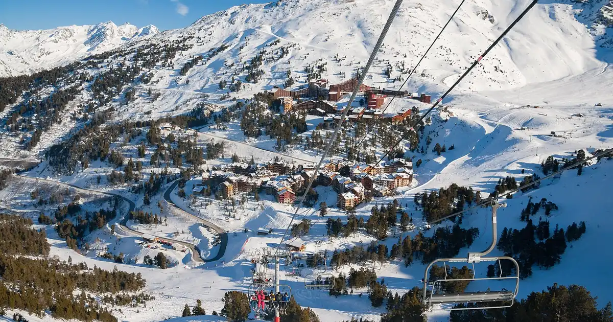
Arc 1600, 1800, 1950 et 2000 comparés pour la neige, les pistes et l'accès, avec 46 hivers passés de notre historique de neige à trois altitudes des Arcs.

Whistler Blackcomb pour tous les niveaux, avec notre historique : environ 370 cm au pic habituel à mi-pente sur 46 hivers passés, mars et avril les plus enneigés.

Une liste pratique pour Stowe, Vermont : couches, protection du visage, masque, carres affûtées et chaufferettes, reliée à la neige de 46 hivers passés sur le Mount Mansfield.
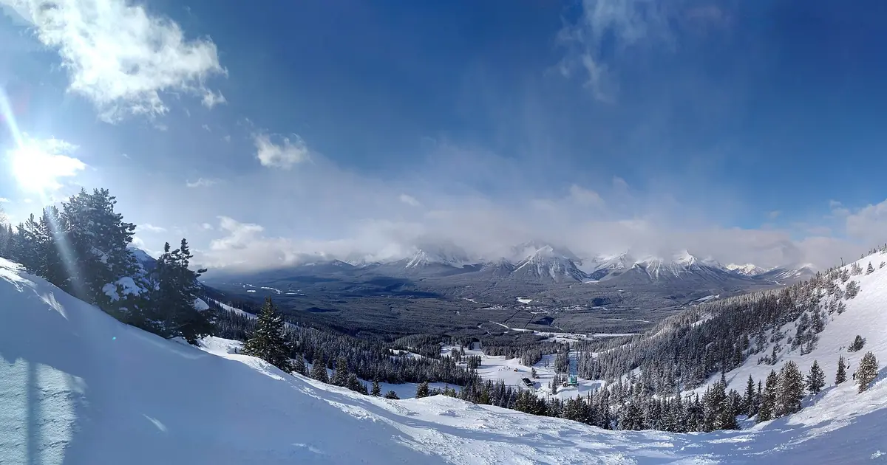
Skier à Lake Louise en début de saison : pourquoi la station démarre tôt, à quoi ressemble d'habitude la neige de novembre et décembre sur 46 hivers passés, et comment skier une neige encore mince.

Ce qui est vrai à La Grave, la montagne hors-piste sous la Meije : terrain, sécurité, neige par mois et tendance, d'après 46 hivers passés.

Magic Mountain à Londonderry, Vermont : une petite station indépendante avec des sous-bois raides, un vieux télésiège rouge et peu de neige naturelle. Cinq choses à savoir, avec la neige de 46 hivers passés.

Sept jours dans la Silvretta Arena, un par un : où est la neige, quand passer à Samnaun, et ce que disent 46 hivers passés de la neige d'Ischgl à trois altitudes.
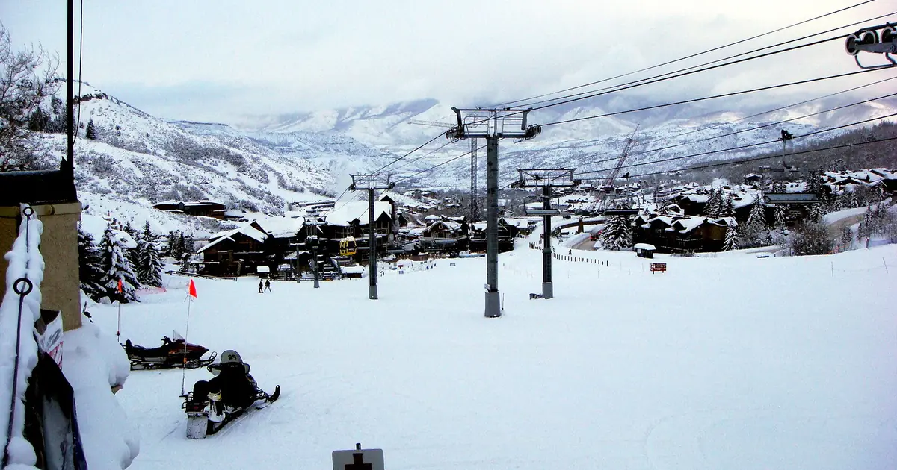
Aspen Snowmass comparé : Snowmass a environ 75 in (190 cm) au pic habituel à mi-pente sur 46 hivers passés, Aspen Mountain environ 69 in (174 cm). Terrain, accès, sécurité.

Gourette et Cauterets côte à côte : altitudes, neige habituelle par mois, meilleures semaines et accès, d'après 46 hivers passés.

Mad River Glen, Vermont : neige naturelle, environ 30 in (75 cm) au pic habituel à mi-pente sur 46 hivers passés, février le plus enneigé. Trois façons de prévoir sa journée.

Banff Sunshine Village mois par mois : environ 100 cm à mi-pente en mars d'un hiver habituel sur 46 hivers passés, avril le plus enneigé en haut, saison jusqu'à fin mai.
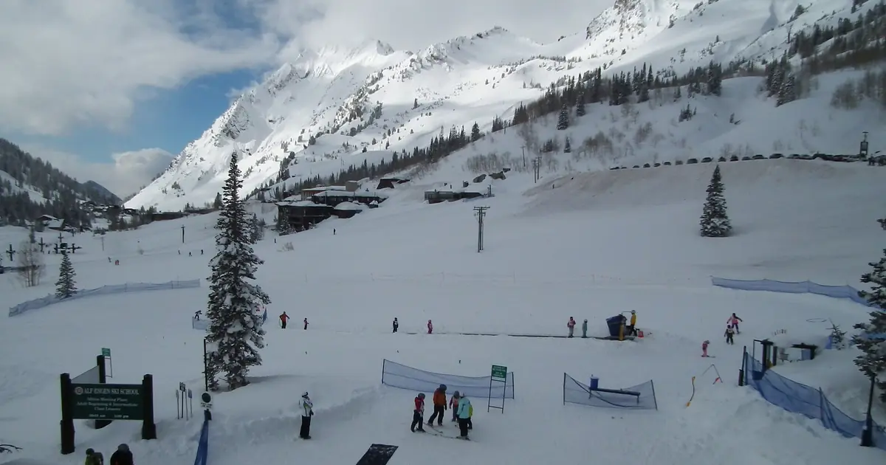
Alta, Utah, en questions : environ 109 in (276 cm) au pic habituel à mi-pente sur 46 hivers passés, pourquoi le snowboard est interdit, quand venir et comment monter.

La neige du jour dans les Pyrénées, d'après notre modèle et notre prévision, annonce neige fine de début de saison et de l'air doux qui peut laisser …
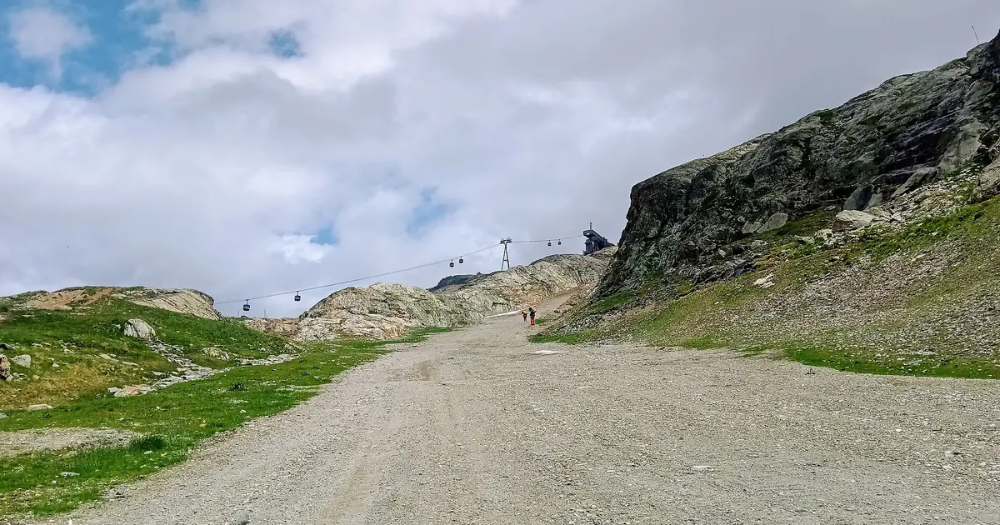
L'Alpe d'Huez fait face au soleil. Comment organiser sa journée selon l'heure et l'altitude, avec la neige de 46 hivers passés, des villages bas au Pic Blanc.

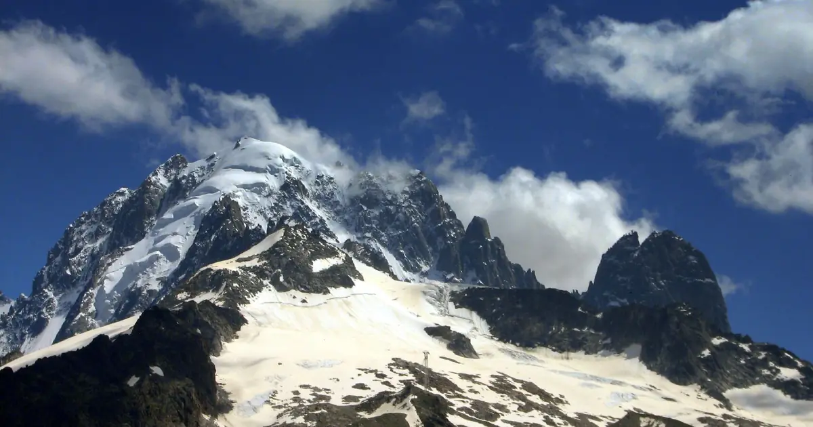
Comment passer une première journée de ski à Chamonix, des Grands Montets au-dessus d'Argentière au bon moment pour chaque pente, avec 46 hivers de données.

Cortina d'Ampezzo de trois façons : Tofana, Faloria-Cristallo et Cinque Torri-Lagazuoi, avec 46 hivers de données de neige à trois altitudes.
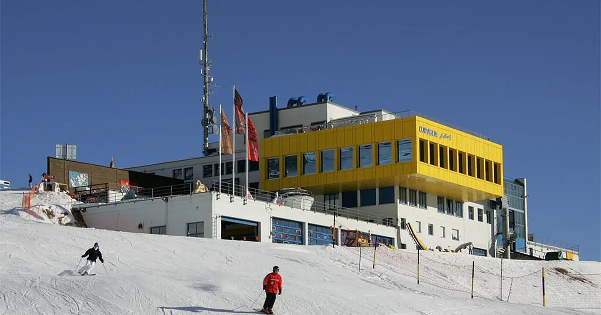
Chantarella, Marguns, Piz Nair, White Turf : les mots qu'on entend à St-Moritz, expliqués, et ce que 46 hivers passés de notre historique de neige disent de chaque altitude de la Corviglia.

Davos et Klosters partagent six montagnes de ski. Un plan jour par jour, en commençant par le Parsenn, avec ce que 46 hivers passés de notre historique disent de ses altitudes.

Quand réserver Courchevel et les 3 Vallées, quel village choisir et où la neige tient, d'après 46 hivers passés.
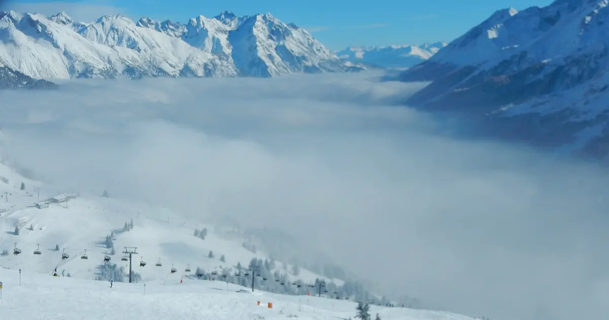
St Anton et Ski Arlberg au fil de l'hiver : la hauteur de neige habituelle chaque mois à trois altitudes, d'après 46 hivers passés.
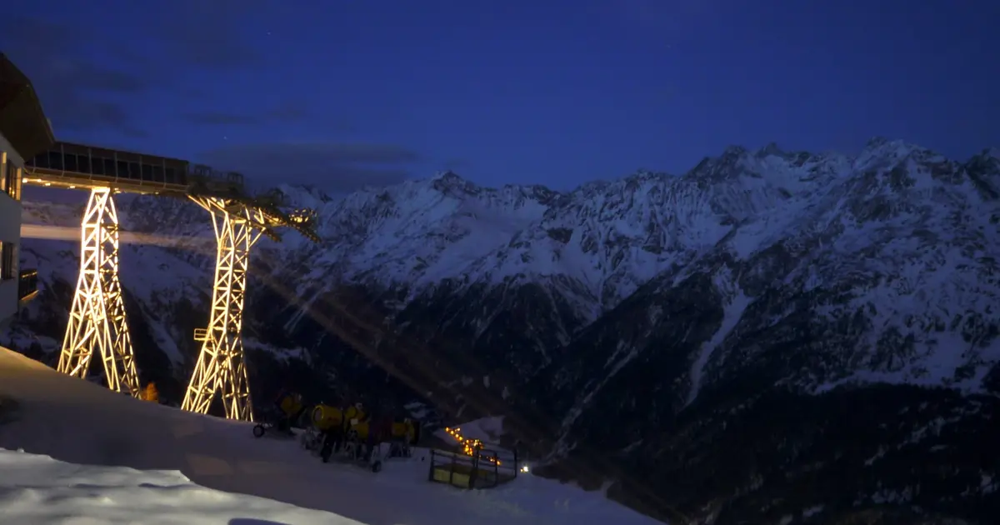
Une année de neige à Sölden, phase par phase : quand les glaciers blanchissent, le week-end de Coupe du monde, le cœur de l'hiver et les semaines de printemps, d'après 46 hivers passés à trois altitudes.

50 cm en haut du domaine : voilà pourquoi La Grave est en tête de notre liste. Nous avons combiné la hauteur de neige du jour, la neige fraîche des …

Un carnet pratique sur Oukaïmeden, dans le Haut Atlas : quand la neige arrive, en quelle quantité, quelles pentes viser et comment y aller depuis Marrakech.

Comment réussir une journée à Luz-Ardiden, petit domaine au-dessus de Luz-Saint-Sauveur dans les Hautes-Pyrénées : la route, les deux secteurs, la neige de 46 hivers passés et les semaines à choisir.
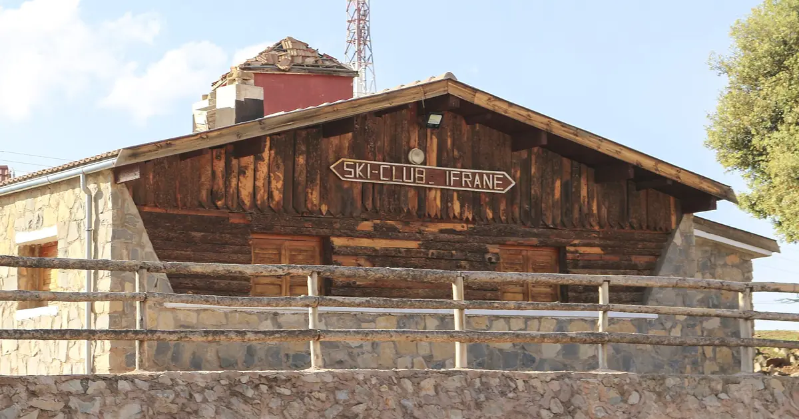
Michlifen, près d'Ifrane, a de la neige par courts épisodes plutôt qu'une saison. Ce que montrent 46 hivers passés, pourquoi la hauteur habituelle est nulle, et comment être là les bons jours.
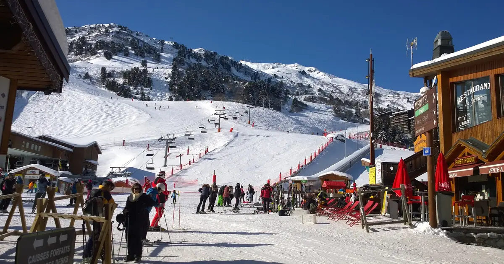
Trois façons de passer une journée depuis Méribel : à l'est vers Courchevel, au sud vers Val Thorens, ou sur place au Mont Vallon, avec la neige de 46 hivers passés à trois altitudes.

Nous avons combiné la hauteur de neige du jour, la neige fraîche des 72 dernières heures et la prévision pour retenir Isola 2000, Artesina et …

Nous avons combiné la hauteur de neige du jour, la neige fraîche des 72 dernières heures et la prévision pour retenir Aramón Cerler, Rasos de Peguera …

Nous avons combiné la hauteur de neige du jour, la neige fraîche des 72 dernières heures et la prévision pour retenir Artesina, Isola 2000 et Riserva …

Nous avons combiné la hauteur de neige du jour, la neige fraîche des 72 dernières heures et la prévision pour retenir Rasos de Peguera, Aramón Cerler …

Nous avons combiné la hauteur de neige du jour, la neige fraîche des 72 dernières heures et la prévision pour retenir Kendall Mountain, Telluride et …

Nous avons combiné la hauteur de neige du jour, la neige fraîche des 72 dernières heures et la prévision pour retenir Crissolo, Prali et La Grave. …

Nous avons combiné la hauteur de neige du jour, la neige fraîche des 72 dernières heures et la prévision pour retenir Masella, Cauterets Cirque du …

Nous avons combiné la hauteur de neige du jour, la neige fraîche des 72 dernières heures et la prévision pour retenir Mount Cain Alpine Park, …

Quelles stations ont presque toujours de la neige ? Nous avons étudié 46 hivers passés (1980-81–2025-26) pour chaque station de notre carte et compté …

Nous avons combiné la hauteur de neige du jour, la neige fraîche des 72 dernières heures et la prévision pour retenir Masella, Estació d'esquí de …

Nous avons combiné la hauteur de neige du jour, la neige fraîche des 72 dernières heures et la prévision pour retenir Silverton Mountain, Telluride …